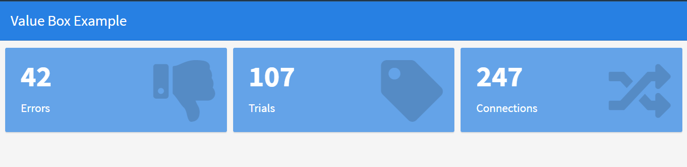

HTML widgets
An htmlwidget is an R package that allows R users to create interactive web-based visualizations using popular JavaScript libraries such as d3.js, leaflet, plotly, and more. In the context of the flexdashboard R package, an htmlwidget can be used to add interactive visualizations to a flexdashboard.
Leaflet
Leaflet is a popular open-source JavaScript library for creating interactive maps. It allows developers to create maps that can display various types of geographic data, such as points, lines, and polyggon shapes, as well as more advanced features such as pop-ups, markers, and custom icons. Leaflet is designed to be lightweight, fast, and easy to use, making it a popular choice for creating web maps for a variety of applications.
The most useufull information are here (http://rstudio.github.io/leaflet/)
Plotly
Plotly is a data visualization library for creating interactive and visually appealing graphics. It supports many types of charts and graphs, including bar charts, line charts, scatter plots, pie charts, and more. Plotly also provides tools for streaming and real-time updating of graphs, as well as for creating dashboards and web-based visualizations. The library is available in Python, R, and JavaScript and can be used in a variety of platforms, including Jupyter notebooks, standalone web applications, and more. Plotly is known for its user-friendly interface and ability to handle large and complex datasets.
The official Plotly homepage for the R language can be found at here. https://plotly.com/r/
Dygraphs
Dygraphs is a fast, flexible, and interactive JavaScript charting library for R. It is designed to visualize time-series data, but can be used to plot other types of data as well. Dygraphs supports multiple types of charts, including line graphs, area graphs, bar graphs, and more. The library is highly customizable, allowing users to change the appearance of their charts to suit their needs.
The official homepage for Dygraphs in R can be found at https://rstudio.github.io/dygraphs/.
rbokeh
rbokeh is a package for the R programming language that provides an interface to the Bokeh library for creating interactive visualizations in the web browser. Bokeh is a popular library for creating interactive visualizations in Python, and rbokeh provides a way to use these capabilities in R. With rbokeh, you can create a wide range of visualizations, including scatter plots, line charts, bar charts, and more, and you can easily customize the appearance of your visualizations to suit your needs.
The official homepage for rbokeh can be found at https://hafen.github.io/rbokeh/.
highcharter
highcharter is an R package that provides a high-level interface to the Highcharts JavaScript library for creating interactive visualizations in the web browser. Highcharts is a popular library for creating interactive charts, and highcharter provides a way to use these capabilities in R. With highcharter, you can create a wide range of visualizations, including bar charts, line charts, scatter plots, and more, and you can easily customize the appearance of your visualizations to suit your needs.
The official homepage for highcharter can be found at https://jkunst.com/highcharter/.
visNetwork
visNetwork is an R package that provides an interface to the vis.js JavaScript library for creating interactive network visualizations. Network visualizations are used to display relationships between nodes, and visNetwork provides a way to create these types of visualizations in R. With visNetwork, you can create a wide range of network visualizations, including force-directed graphs, hierarchical graphs, and more, and you can easily customize the appearance of your visualizations to suit your needs.
The official homepage for visNetwork can be found at http://datastorm-open.github.io/visNetwork/.
Detail tutorials for each of these packages can be found elsewhere, soon.
Data tables
There are several ways to include tabular data within a flexdashboard, including using R functions such as renderTable() or renderDataTable(). These functions allow you to display data from R data frames or other sources as interactive tables within your dashboard. The tables can be sorted, filtered, and paginated, and users can also export the data to various formats, such as CSV or Excel.
In addition to these R functions, you can also include tabular data within a flexdashboard using HTML tables. This allows you to control the exact layout and styling of your table, and to include custom features such as sorting and filtering.

ValueBox and Gauges
A value box is a simple, single value indicator in a flexdashboard. It’s used to display a single value in a compact format, often with a small accompanying icon or color.
A gauge is a type of chart used to display a single value within a specified range. It’s used to represent a measurement or value that falls within a defined range, such as the level of a particular resource (e.g., water in a tank) or the progress toward a goal.
In flexdashboard, both value boxes and gauges can be created using R code and the shiny package. Here is a simple example of how you could create a value box in flexdashboard:


Note that the value argument in the valueBox function sets the value displayed in the box, the subtitle argument sets the text displayed beneath the value, and the icon argument sets the icon displayed next to the value.
In the gauge function, the value argument sets the value to be displayed on the gauge, the min and max arguments set the range of the gauge, the symbol argument sets the units for the value, and the gaugeSector argument sets the color and label of different sections of the gauge.